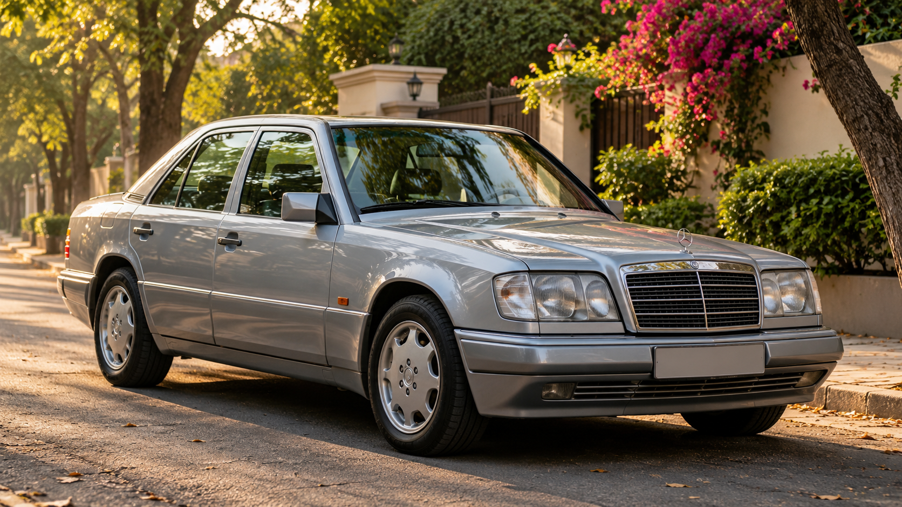

01
Heritage & model guide
Understand the 124 family, design evolution and why variant-specific identification matters.
Explore heritage ↗A community concept for those who drive, restore, preserve and celebrate the Mercedes-Benz 124 series — with an Indian point of view.
A non-commercial college project. Sample profiles and forms are demonstrations, not live community data.

124 series · Since 1984The W124 has a global heritage, but Indian ownership brings its own questions: finding a well-kept example, understanding market-specific details, sourcing compatible parts and planning maintenance in local conditions.
This project brings heritage, technical learning, owner-story formats and source-led discovery into one organised destination — without pretending a live club or verified owner network already exists.
Start with the model guide ↗Locally stored illustrative imagery for the project. Authentic owner photographs should be added only with permission and credit.


These images are AI-generated illustrations, not documentary photographs of actual Indian W124 owners' cars.
Each area has a defined purpose; prototype features are clearly labelled.
Understand the 124 family, design evolution and why variant-specific identification matters.
Explore heritage ↗Explore clearly labelled demonstration profiles and test city/status filters.
Browse registry ↗Practical inspection and maintenance frameworks, with safety and verification caveats.
Open the garage ↗Organised reference topics and a verification-first approach to technical facts.
View library ↗Owner introductions, restoration diaries and responsible ways to contribute.
Meet the community ↗Explore source discussions, specialist-directory structure and market-watch principles.
Find resources ↗Team-BHP discussions offer useful first-person perspectives. They are evidence of individual experiences, not universal facts or official repair instructions.
Use archive threads to explore how enthusiasts document the W124's presence and variants in India.
Team-BHP W124 archive ↗Long-term reports can surface maintenance decisions, restoration realities and owner learning.
Browse W124 topics ↗Forum conversations are starting points. Verify model-specific information before spending money or attempting repairs.
Support discussion ↗The prototype shows how an owner contribution could be collected—with consent and editorial review.